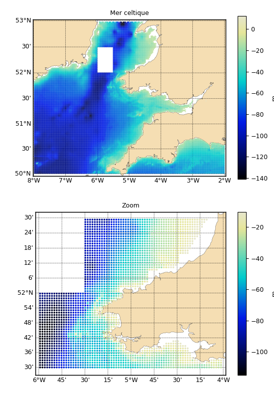

1.3.3.4.4. Les fichiers xyz¶
Voir : XYZ
# Lecture d'un fichier xyz et plot
from vacumm.misc.io import XYZ
from vacumm.config import data_sample
xyz = XYZ(data_sample('celtic_sea.xyz'))
# Verifs
print len(xyz)
# -> 23538
print xyz[0:3]
# -> [(-5.93,52.97,25.0),(-5.90,52.97,41.0),(-5.85,52.97,33.0)]
# Exclusion
xyz.exclude([[-6., 52.], [-5.5, 52], [-5.5, 52.5], [-6., 52.5]])
# Modification
print xyz.z.max()
# -> 141.0
xyz *= -1
print xyz.z.max()
# -> -141.0
# Plot
import pylab as P
P.figure(figsize=(5.5, 8))
P.subplots_adjust(left=.12, top=.96, right=1, bottom=.06)
P.subplot(211)
xyz.plot(title='Mer celtique', units='m', m=True,
show=False, size=2, cmap='cmap_bathy')
# Zoom
xyz_zoom = xyz.clip((-6, 51.5, -4, 52.5), long_name='Zoom')
P.subplot(212)
xyz_zoom.plot(m=True, savefigs=__file__, size=7,
show=False, cmap='cmap_bathy')
P.close()
# Sauvegarde
xyz_zoom.save('zoom.xyz')
# Autres exemples d'initialisations
xyz2 = XYZ(xyz.xyz)
xyz3 = XYZ((xyz.x, xyz.y, xyz.z), units='m')
xyz4 = XYZ(xyz, long_name='my XYZ')

Un fichier ascii à trois colonnes (format .xyz) et un zoom sont tracés, puis réinitialisés part trois méthodes.